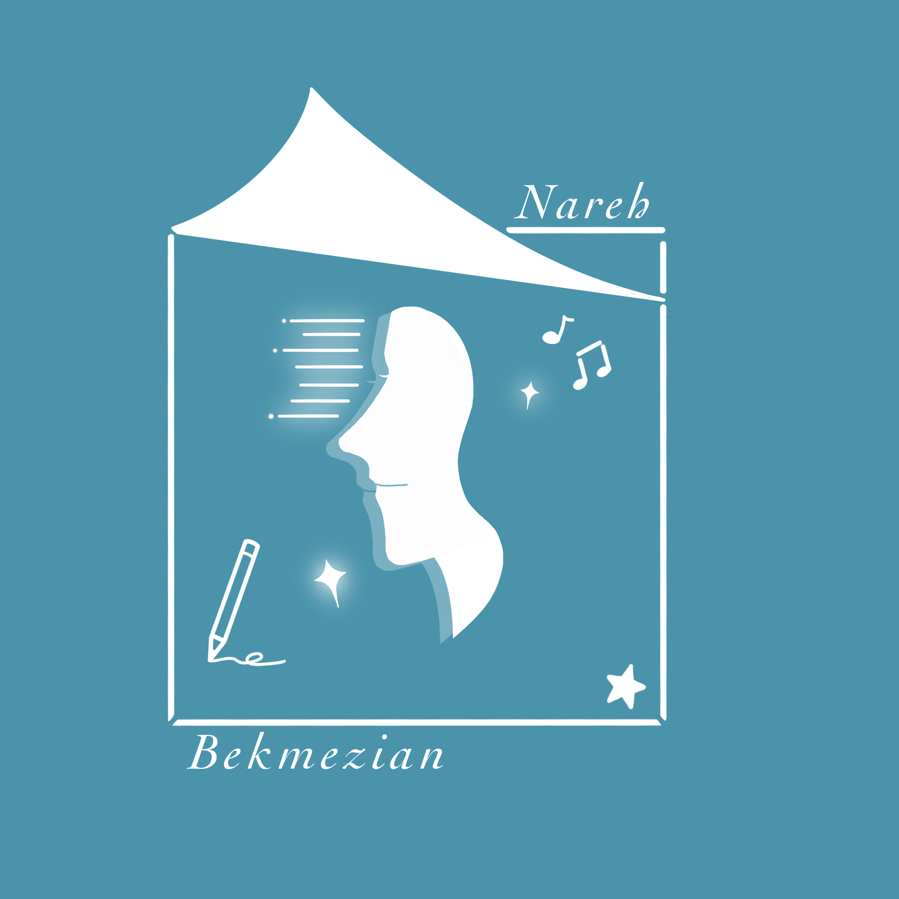

About Me
I was born and raised in China and I am now studying abroad in Canada. Since I was a child, I have shown
an
interest in drawing and music, which have supported me as I grow up and leaded me to my current study
at
GBDA in University of Waterloo. Although studying and living independently at the University of Waterloo has been a challenge, it
has
also broadened my horizons and taught me so much more. I have learnt skills about ux design and digital design from lessons, and I also built several projects to apply the skills I learned.
My Educational Experience
| TIME | COUNTRY & GRADE | SCHOOL NAME |
| 2015 - 2017 | China, Grade 7-9 | Wenqing Foreign Languages School |
| 2017 - 2018 | China, Grade 10 | Wenqing Foreign Languages School |
| 2018 - 2021 | Canada, Grade 11 - 12 | St. Joseph's College School |
| 2021 - now | Canada, First & Second Year | University of Waterloo |
Skills & Working Experience
UX Design

Working Experience
Volunteering
My Works





you have reached the bottom of this page~